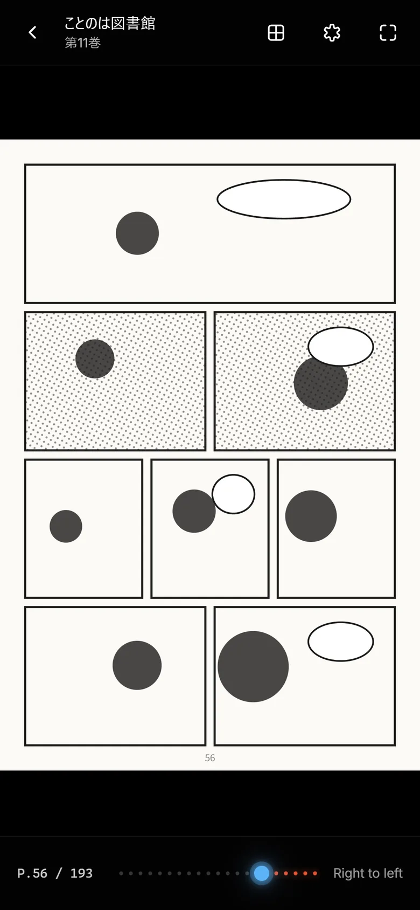
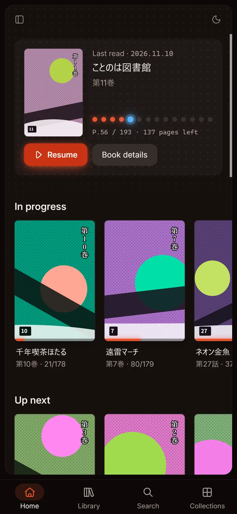

Your manga folders, ready to read in any browser
MARS is a manga and comic server you run yourself. It scans your folders, groups them into series and books, and picks up where you left off on any device with a browser.
The current version is v0.1.0, a preview. v1.0.0 was withdrawn after problems with large libraries were found.
Docker image about 8 MiBamd64 and arm64MIT license

Open a browser and start reading
The reader runs in the browser. You don't install an app to read.
- Right to left, left to right, and vertical. Continuous vertical scrolling like a webtoon, and two-page spreads.
- Remembers the page you reached and takes you on to the next book.
- Incognito mode reads without saving your progress.
- Choose a black, gray, or white background.


Point it at a folder, get series and books
A folder of archives becomes a series. MARS also reads cover images and ComicInfo.xml.
- CBZ / ZIP, CBR / RAR (including RAR5), CB7 / 7z, and PDF.
- Watches your files for changes and scans by itself. Scheduled scans too.
- Edit metadata on screen. A locked field keeps its value when a scan runs.
- Collections and read lists group series and books.

Separate users, and read from other apps too
Choose which libraries each user can see.
Phones and tablets
Add MARS to your home screen and use it like an app (PWA).
Mihon
A Komga-compatible API, used by the Komga extension and tracker in Mihon.
OPDS 1.2
Read from e-book apps such as Panels, Chunky, and KyBook.
Users and API keys
Separate administrators from regular users. Issue API keys for external apps.

Your manga.Your server.Your universe.
Start it with Docker, then three steps
You need Docker and a folder of comics, on linux/amd64 or linux/arm64.
-
Run it
Pull the published image and run the container. Replace
/path/to/comicswith your comics folder.docker run -d --name mars -p 25600:25600 -v mars-data:/data -v /path/to/comics:/comics:ro ghcr.io/tabunugoku/mars:0.1
-
Create the administrator
Open http://localhost:25600, enter the setup token, and create the administrator account. This command shows the token:
docker logs mars 2>&1 | grep token=
-
Add a library
Go to Admin > Libraries, select Add library, enter
/comicsas the folder, and save.
What to read next
Documentation index
Every guide to installing, using, and running MARS.
Install with Docker
Volumes and permissions, and starting MARS with docker compose.
API
Authentication, the error format, and examples for the REST API.
Roadmap
What is planned next, and the features under consideration.
Releases
What changed in each version.
GitHub
Source code, issues, and how to contribute.